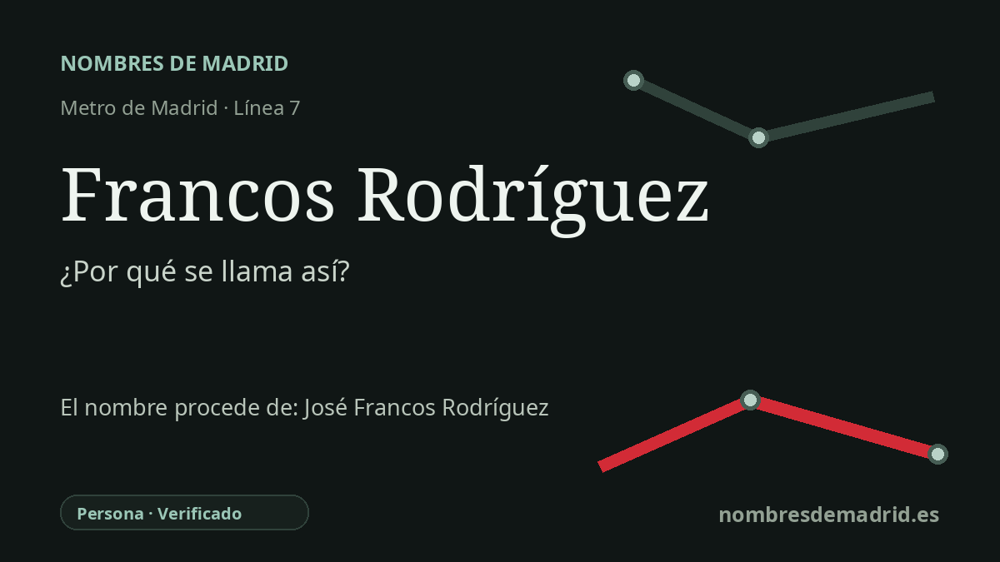

Publicado el · Investigación de Nombres de Madrid · Cómo verificamos cada origen · 6 fuentes consultadas
Respuesta rápida
La estación de Francos Rodríguez toma su nombre de la calle de Francos Rodríguez, dedicada a José Francos Rodríguez, médico, periodista, escritor y político madrileño. Fue alcalde de Madrid, ministro, académico de la RAE y figura clave de la prensa madrileña.
La historia del nombre
La estación de Francos Rodríguez toma su nombre de la calle de Francos Rodríguez, eje viario junto al que se construyó la parada de la línea 7. El nombre recuerda a José Francos Rodríguez, figura madrileña cuya trayectoria unió medicina, periodismo, literatura y política.
Francos Rodríguez nació en Madrid el 5 de abril de 1862. Estudió Medicina y estuvo vinculado al médico y académico Carlos María Cortezo, aunque su fama pública procedió sobre todo del periodismo y la escritura. La Real Academia Española destaca su presencia en numerosos periódicos y su dirección de La Justicia, El Globo y Heraldo de Madrid, uno de los diarios madrileños relevantes de comienzos del siglo XX.
Su carrera política también explica que su nombre pasara al callejero madrileño. La Real Academia de la Historia lo identifica como alcalde de Madrid desde 1910 hasta marzo de 1912, gobernador civil de Barcelona en 1913, ministro de Instrucción Pública y Bellas Artes en 1917 y ministro de Gracia y Justicia en 1921. Además fue diputado por Puerto Rico, Almansa y Alicante, y más tarde senador vitalicio.
La estación pertenece a una historia del transporte mucho más reciente. La Comunidad de Madrid documenta que la prolongación Canal-Valdezarza de la línea 7 entró en servicio el 12 de febrero de 1999 y creó tres estaciones nuevas: Islas Filipinas, Francos Rodríguez y Valdezarza, además del intercambio de Guzmán el Bueno. En Francos Rodríguez, los accesos se situaron en la avenida de Pablo Iglesias, la calle de Alejandro Rodríguez y la calle de Moguer, integrando la estación en el entorno de Bellas Vistas, Tetuán y Moncloa-Aravaca.
La identidad de la persona homenajeada está bien sustentada, pero algunos detalles biográficos se confunden con facilidad. La Asociación de la Prensa de Madrid presenta a Francos como sucesor de Miguel Moya en la presidencia de la APM en 1920 y señala que el Palacio de la Prensa fue inaugurado formalmente en abril de 1930, aunque otras referencias hablan de instalación o actividad en torno a 1928. La fecha exacta de su fallecimiento también aparece de forma contradictoria: la RAH da el 11 de julio de 1931, la RAE el 11 de diciembre de 1931 y varias fuentes de prensa o estudios posteriores el 13 de julio de 1931. Estas discrepancias no alteran el origen del nombre de la estación, que es claramente personal y conmemorativo.